Key Metrics
The Problem
A men’s clothing wholesaler wanted a contact list of apparel shops and wholesale offices across Egypt. The shops are spread across public business directories (Yellow Pages Egypt, to-all.com, dalilmadina, EgypYello, buy.com.eg) and a public QIZ garment-factory list, each with its own layout, Arabic spelling variants, Arabic-Indic digits and inconsistent area labels.
Scraping social-media commenters for phone numbers was ruled out: it needs logins, breaks platform terms and harvests personal data. Social platforms are handled only through manual exports, and buyer-intent rows from those exports are stored without phone numbers (they still keep a username and comment).
Architecture

Approach & Implementation
- Directory collectors: one script per source writes a shared CSV layout with jittered delays and a resumable progress file. Most use plain HTTP requests; Playwright is used for the Yellow Pages pages that need a browser.
- Social export parsers: Facebook, Instagram and TikTok export files (and an own-Page Graph API option) are parsed offline; there is no live social scraping.
- Contact-hint phone gate: for free text from exports, Arabic-Indic digits are normalized and a number is kept only when the text carries a contact hint (WhatsApp, call, contact) or a wa.me link. Directory listings keep the number the business published.
- Entity resolution: Arabic name normalization plus union-find clustering: a shared phone or directory ID merges, the same name in the same governorate merges, and the same name across areas goes to a review queue instead of auto-merging.
- Outputs: per-run businesses CSV/XLSX, a contacts CSV and a review-queue CSV. SQLite holds the social-export leads and buyer-intent tables (sample data only).
Challenges & Solutions
Challenge: Duplicate shops across directories
The same shop appears in several directories under different Arabic and English spellings, and chains share names across areas.
Solution: Deterministic tiers + review queue
Names are folded (alef/hamza, taa marbuta, diacritics, generic words removed) and clustered by rules a sales team can audit; uncertain same-name, different-area matches go to a review file rather than being merged.
Challenge: Collecting politely
One directory serves a challenge page after a few rapid loads, and several hide phone numbers behind a click-to-reveal button.
Solution (partial): Pacing and resume
Collectors pace requests and resume from saved state, and a manual protocol covers click-to-reveal numbers. Still open: no robots.txt check, a generic browser user-agent, retries in a fresh browser context after a challenge, one automated reveal path, and no suppression list.
Outcome
Saved exports hold 3,163 canonical businesses outside Cairo/Giza (from 3,497 raw rows; 3,110 with a phone; 25 governorate labels) and 2,557 for Cairo/Giza plus QIZ factories (1,780 with a phone). A 200-business website-enrichment test added one verified phone, so it stays a secondary check.
Known gaps: verification labels are too generous and mark landlines “invalid”, the WhatsApp column is inferred from the mobile prefix, coordinates are empty (it is a per-area list, not a map), and governorate values in the QIZ rows need cleaning.